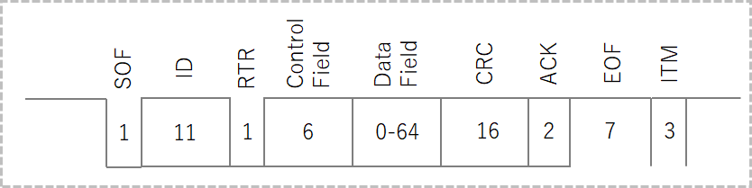
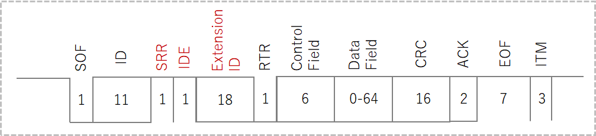

2023/07/23
CANとは、「Controller Area Network」の略で、主に自動車の電子部品の制御に使われています。
本ページでは、自分が調べたCANの基本仕様についてまとめています。
CANはBosch社によって仕様が公開され、主に自動車業界での車両制御に使用されています。
現在はISOにて国際的に標準化された規格（ISO 11898）になっています。
自動車の部品が電子化すると同時に、それらの通信に使用されているCANも急速に広がっていきました。
また、自動車業界以外では、FA機器などでも使用されています。
CANの基本形で、後述する11bit IDの「標準フォーマット」を使用します。
CAN 2.0aに対して、29bit IDの「拡張フォーマット」を使用します。
標準フォーマットでも通信可能となっています。
バスやトラックなどの重車両や商用車両で広く使用される通信プロトコルです。
SAE（Society of Automotive Engineers）が定めており、CAN 2.0bをベースにしています。
車両のエンジン、トランスミッション、ブレーキ、サスペンションなどの様々な制御システム間での通信を規定しています。
CAN FDは、"Flexible Data-Rate"の略であり、データレートが可変で最大5Mbpsまでサポートします。
また、1フレームのデータ長を8バイトから64バイトに拡張しており、従来のCANよりも高速、大容量通信を可能にしています。
CANでは、どのデバイスもマスターとしてデータを送信するとともに、スレイブとしてデータを受信することが可能です。
マルチマスターによって以下を実現できます。
複数のデバイスが同時にバスアクセス可能なので、同時にデータが送信された場合は、適切な調停による優先順位付けが重要です。
マルチマスターにおけるバスの調停方法がCSMA/CA（Carrier Sense Multiple Access with Cpllision Avoidance）です。
ノードに優先順位をつけ、衝突が起きた場合は優先順位の高い通信を優先して送信する仕組みになっています。
優先順位はIDによって判別します。
具体的には、「ドミナントとレセシブ」の関係を使用します。
ドミナントは"優性"、レセシブは"劣性"の意味で、ドミナントとレセシブが別のノードから同時に送信された場合は、ドミナントが優先されます。
例えば、IDが0のノードと1のノードが同時にデータを送信した場合、IDの0と1が比較され、IDが0のノードが優先されます。
通信時、もし1台のノードが受信に失敗した場合は、データを受信した全ノードがデータを破棄し、全ノードが受信に成功するまで送受信を繰り返します。
これにより、ある制御を行う場合、全ノードにおいて使用するデータは同一ということになるので、データの一貫性を保つことができます。
エラー検出は、CRCの整合、ACK、送信ビットのモニタリング、プロトコルのフォームチェック、ビットスタッフィングチェックなどで行います。
CANはクロック信号線がないため、各デバイスで通信速度を正確に合わせる必要があります。
通信速度の「同期」は、信号がレセシブからドミナントへ変化する時（"1"->"0"変化時）に同期をとっています。
CANでは、データが"1"->"0"に変化するときに同期が行われるので、もし"0"もしくは"1"が長時間連続した場合は同期ができない状態になり、ビットずれが発生する可能性があります。
そこで、CANでは「ビットスタッフィング」を採用しています。
ビットスタッフィングとは、バス上で同じ状態が5回連続した場合、それまで送信されていた状態と反対の状態のビットを1つ挿入する仕組みのことです。
たとえば、"000000111111"と連続する場合、実際には"00000101111101"と送信されることになります。
これにより、確実に同期をとることができます。
CANには、以下4つの通信タイプがあります。
データを送信するフレームです。
データフレームには「標準フォーマット（11ビットID）」と「拡張フォーマット（29ビットID）」の2つがあります。
IDが11ビットです。
標準フォーマットは11bit IDで2048種類となりますが、拡張フォーマットは29bit IDで約5億4千万種類となります。
その他は標準フォーマットとおなじです。
リモートフレームはデータフレームの要求に使用されます。
基本構造はデータフレームからデータフィールドを除いたもので、IDは要求先のデバイスのIDを指定します。
RTRはレセシブになります。
近年ではリモートフレームはとほんど使わず、各デバイスが定期的にデータフレームを送信する方式の方が一般的のようです。
オーバーロードフレームは、CANコントローラが前回のフレームの処理をまだ完了していない時に、次のフレームの開始を遅延させるために用いられます。
近年のCANコントローラは処理速度が向上しており、オーバーロードフレームはあまり使用されていないようです。
エラーフレームは、通信中に各種エラーが発生した時に送信されるフレームで、ビットスタッフィングルールに違反、または固定フォーム部分を破壊する形で、直近の送信を中断させます。
これにより、ネットワークに接続されているノードに異常を知らせます。
CANではエラー状態というものが定義されており、接続しているデバイスは以下の3つのいずれかになっています。
エラー状態は、エラー発生数によって決定されます。
個々のデバイスでエラーカウントのパラメータを有しており、エラー発生時にカウントアップ、通信成功時にはカウントダウンしています。
（詳細なカウントアップ・ダウンの仕様についてはここでは省きます）
SelfDriving Index
2023/8/8
J1939の仕様
2023/8/8
J1939の仕様
2023/7/23
CANの基本
2023/7/6
「トコトンやさしい自動運転の本」まとめ
Sponsor